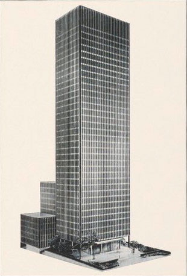

375 Park Avenue
For firms seeking a significant New York address, this 38-story, air-conditioned building, first ever to be sheathed in rich enduring bronze and with its own half-acre landscaped plaza, is destined to become a business landmark throughout the nation. In architectural achievement, advanced installations and interior detailing, 375 Park Aveune brings into reality a concept of the office home never before attained. Reservations for available upper floors of 11,500 to 13,000 sq. ft. each are not being considered for late 1957 occupancy. For descriptive brochure and plans, write: Renting and Managing Agent, Cushman & Wakefield 281 Madison Avenue, New York 17, N.Y.